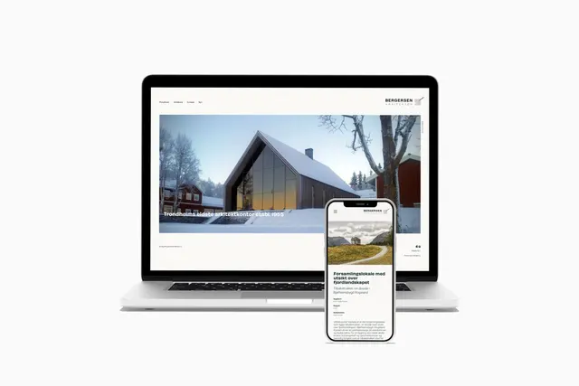
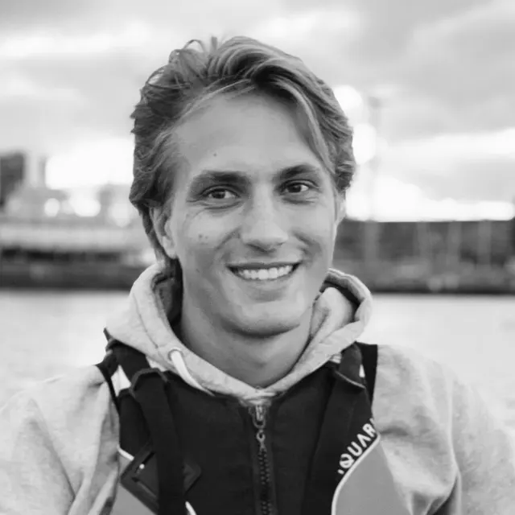
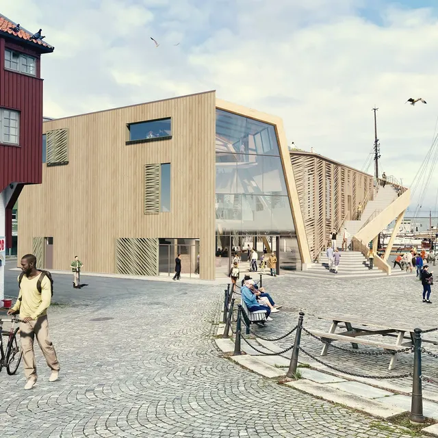
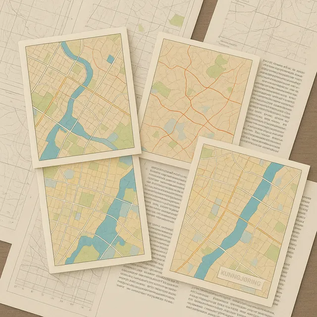

Nytt fra kontoret
Fag. Folk.
Forandring.
Prosjekter, besøk, omtaler og små glimt fra hverdagen på kontoret.

September 2026
Open House Trondheim 2026
Bygninger du vanligvis ikke får se fra innsiden

April 2026
Rørosseminaret 2026
Inspirasjon og faglig påfyll

Februar 2025
Årets arkitekturstudietur
Mosjøen

21. februar 2025
Ny nettside
Form til Fjells
Fra pressearkivetOmtalt.
September 2025
Fjernet 100 tonn betong
Adressa
Fra pressearkivetOmtalt.
September 2025
Spesielle leiligheter i fredet bygg
Adressa

2024
Ny ansatt
Nicolai

2023
Nye Ravnkloa
Arkitektkonkurranse

Planarbeid
Kunngjøringer
Offentlige dok
Fra arkivet
Nyhetsarkiv
Eldre nyheter
La oss begynne med en samtale